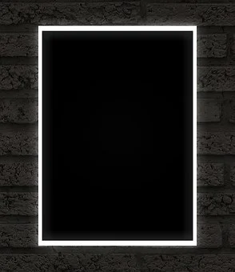

DIARRA CORALIE
ALTERNANCE MASTER MARKETING &
COMMUNICATIONS DIGITALES
"La vocation, c'est avoir pour métier sa passion"
Storytelling
Issue de formation commerciale,
orientée marketing digital, je suis
expérimentée et hautement
motivée à la recherche d'un poste
dans le domaine du marketing et
des communications digitales
Rythme d'alternance : 1 semaine
école / 3semaines en entreprise
COORDONEES
Permis B + véhicule
Age : 22ans
Téléphone : 06.13.27.42.97
Email : coralie.diarra@outlook.fr
LinkedIn : linkedIn
EXPERIENCES PROFESSIONNELLES
Responsable commercial (alternance)
AMS 123 Pare-brise - Octobre 2019 / Aout 2020
- Développement du portefeuille client
- Création et supervision des opérations commerciales
- Prospection physique et téléphonique
Manager boutique (alternance)
Blue jean's Croix - Septembre 2017 / Aout 2019
- Création de support de communication
- Création d'événémments
- Suivi des actions marketing
- Conseil client
- Réassort
EXPERIENCES ACADEMIQUES
Simplon - Roubaix
Ms integratrice et developpeuse d'applications web 2021
Simplon - Roubaix
Certification "Mobiliser les compétences numériques
fondamentales" - n° RS3661 2020-2021
Ipac Bachelor Factory - Lille
Licence Commerce Marketing Négociation (Option
marketing digital) 2019-2020
ULCO - Dunkerque
DUT Techniques de Commercialisation 2017-2019
Lycée Jean Bart - Dunkerque
Bacaclauréat STMG (option marketing) 2017
COMPETENCES
Création de contenu :
canva
Lightroom
Linguistiques :
Anglais B2
Espagnol B2
Néerlandais A1
Informatiques :
HTML, CSS, Javascript, Php
Pack Office
SKILLS & CO.
Voyages : Malaisie,
Thailande, Turquie, Arabie
saoudite, Espagne,
Belgique, Côte d'ivoire,
Benin
Sport : Championne de
France judo 2015/2016
Photographie : mariage,
aniversaire, etc